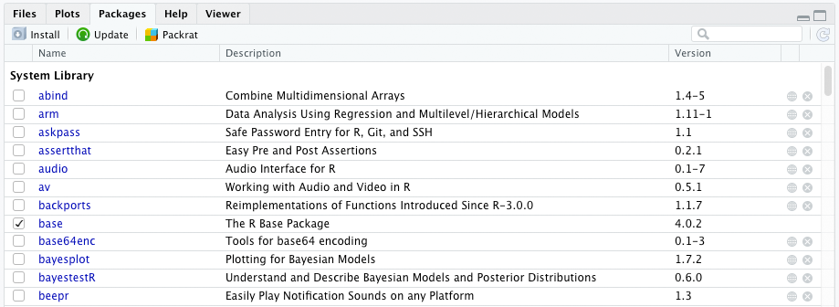
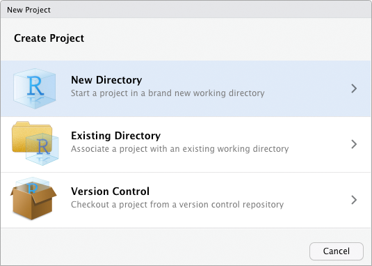
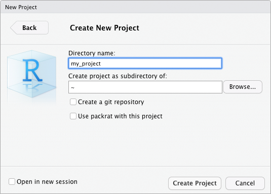
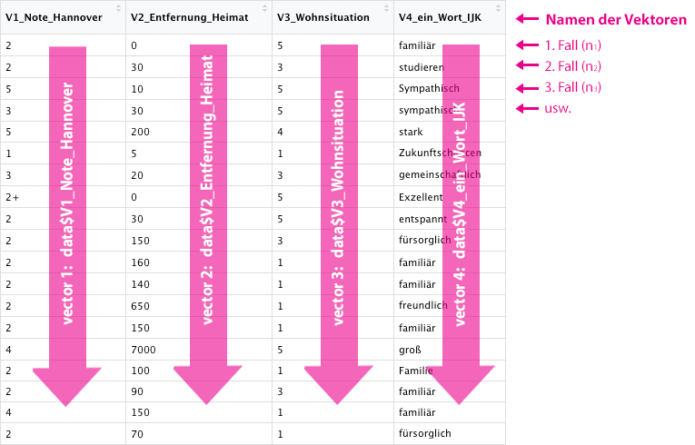

Kapitel 4 Einführung in R
Nachdem nun die ersten Details zum Hintergrund von R geklärt sind und Sie vermutlich auch bereits R und RStudio installiert haben, kann es losgehen. Wir starten mit R. Ich gehe im folgenden davon aus, dass Sie noch keinerlei Programmierkenntnisse haben.
Eine Programmiersprache zu lernen hat gewisse Ähnlichkeit damit, eine Fremdsprache zu erlernen. Man muss die Grammatik kennen und Vokabeln pauken um sich verständigen zu können. Und verständigen wollen Sie sich ja auch beim Schreiben von Code, nur eben nicht mit anderen Menschen, sondern mit einem Computer.
Leider sind Computer bisweilen ganz besonders pingelige Gesprächspartner. Sie beharren z.B. sehr genau auf korrekte Ausdrucksweisen und haben auch bei der Grammatik nur einen gewissen Spielraum. Zum Glück unterstützt RSTudio das Lernen von R mit einigen Features, die uns die Verständigung leichter machen! Dadurch muss man z.B. nicht alle Vokabeln und die Syntax auswendig kennen um sich verständigen zu können. Trotzdem sollte man natürlich den grundlegenden Aufbau - die Syntax der Sprache - kennen.
4.1 R-Syntax
Bevor wir tiefer in die Arbeit mit R und RStudio einsteigen, ist es jetzt an der Zeit, ein erstes eigenes R-Skript zu schreiben. Bereits im Abschnitt haben Sie erste Syntax-Beispiele kennengelernt und gesehen, dass R ein passabler Taschenrechner ist. Jetzt möchten wir R genauer kennenlernen. Wenn Sie mögen, öffenen Sie ein neues R-Skript und übertragen Sie die Schritte.
4.1.1 Rechnen mit R
OK, als Taschenrechner ist R vielleicht etwas unpraktisch. Trotzdem, rechnen ist natürlich eine der ureigensten Funktionen von R und selbstverständlich beherrscht es alle Grundrechenarten und alle Rechen- und Klammerregeln:
1 + (2 - 3 * 4) / 5 ## [1] -1Wenn Sie diese Zeile ausführen, z.B. über den Button “Run” oder durch den Shortcut Cmd/Ctrl + Enter/Eingabe erhalten Sie umgehend das Ergebnis.
4.1.2 Zuweisungsoperator
Das man mit R rechnen kann, mag zwar im Einzelfall ganz nützlich sein, aber natürlich kann R viel mehr. Es würde z.B. Sinn machen, das Ergebnis von so einer Berechnung abzuspeichern, so dass wir zu einem späteren Zeitpunkt wieder darauf zugreifen können. Dazu gibt es in R den Zuweisungsoperator <- Mit diesem Pfel, der aus der spitzen Klammer und dem Bindestrich besteht, kann man einem Objekt einen Wert zuweisen. Den Namen des Objektes muss man selbst festlegen. Ich habe im folgenden ein Objekt erzeugt, dass ich x genannt habe und ihm den Wert der Berechnung 1 + 2 zugewiesen:
x <- 1 + 2Führt man diesen Code aus, wird in der Console nicht das Ergebnis ausgegeben. Stattdessen gibt es aber oben rechts im Tab “Environment” ein neues Objekt x, das den Wert 3 enthält:

Um das Objekt auch in der Console auszugeben kann man…
- Den Befehl entweder in Klammern schreiben. - So wird er gleichzeitig ausgeführt und ausgegeben. – Man muss außerdem natürlich keine Rechenoperation auf die rechte Seite des Zuweisungsoperators schreiben, sondern kann direkt den Wert “3” zuweisen, wenn man ihn kennt ;)
(x <- 3)## [1] 3- Einfach nach der Zuweisung nochmal ein x schreiben. Der Name des Objekts bewirkt immer das R versucht diesen in der Console darzustellen.
x## [1] 3- Das Objekt x dem
print()-Befehl übergeben.
print(x)## [1] 3Der Ausgabe in der Konsole stellt R immer eine eckige Klammer [] mit einer 1 voran. Dies bedeutet, dass es sich um das erste (und im obingen Beispiel auch jeweils das einzige) Element einer Ausgabe handelt. Ausgaben können aber durchaus auch aus mehreren Teilen bestehen und sogar ineinander verschachtelt sein, wie wir später noch sehen werden.
4.1.3 Objektnamen
Die Namen von Objekten kann man im Prinzip frei bestimmen, natürlich bietet es sich an, sprechende Namen zu verwenden, die man sich einigermaßen gut merken kann, die aber trotzdem einigermaßen kurz sind. Außerdem ist es schlau, bei Variablen die zusammengehörig sind das selbe Präfix zu verwenden (z.B. bei einer Skala zur Einstellung alle Variablen mit attitude_ beginnen zu lassen).
Außerdem gibt es einige Regeln, an die man sich bei der Benennung halten muss:
Objektnamen können große und kleine Buchstaben, Zahlen und Punkte (.) und Unterstriche (_) enthalten. Andere Zeichen sind nicht erlaubt, insbesondere keine Leerzeichen.
Zahlen, Punkte und Unterstriche dürfen nicht am Anfang stehen.
Umlaute (z.B. ä, Ö oder ß), Sonderzeichen (z.B. %, & oder =) und Leerzeichen sind nicht erlaubt.
Objektnamen sind ein-eindeutig, d.h. es kann nur ein Objekt mit einem Namen geben und nicht zwei Objekte die bei “x” heißen.
Objektnamen sind “case sensitiv.” Das bedeutet es kommt genau darauf an ob große oder kleine Buchstaben verwendet werden. Die Namen x und X sind unterschiedlich und deshalb kann es beide Objekte gleichzeitig geben. - Aber das wäre natürlich sehr verwirrend.
Man sollte keine Namen verwenden, die in R schon belegt sind (z.B. nicht “mean” für einen Mittelwert, weil es in R auch eine Funktion
mean()gibt).
Über diese Regeln hinaus gibt es Konventionen, an die man sich halten sollte, weil sie der Übersichtlichkeit dienen. Ich verwende z.B. gerne den snake_case, bei dem alle Objektnamen kleingeschreiben werden und unterschiedliche Namensbestandteile durch einen Unterstrich voneinander getrennt werden. Welcher Konvention man folgt ist natürlich Geschmackssache.

4.2 Kommentare
4.2.1 Einfache Kommentare
Bisher waren unsere R-Skripte noch nicht so wahnsinnig lang, aber Sie können sich vorstellen, dass es schnell komplexer werden kann. Damit wir den Überblick behalten, kann man in R auch Kommentare schreiben. Solche Kommentare werden durch ein # gekennzeichnet. Alles was in einer Zeile nach dem # steht wird von R nicht interpretiert.
Da Code nicht nur für Computer gemacht ist, sondern auch für menschliche Leser gehören Kommentare unbednigt dazu, wenn man R-Skripte schreibt. Man kann darin festhalten, warum man einen bestimmten Code wie geschreiben hat und gerade beim Lernen von R können Kommentare als Gedächtnisstütze dienen.
Hier ein paar Anwendungsbeispiele:
# Dem Objekt x den Wert 3 zuweisen:
x <- 3
print("Hello World!") # muss noch übersetzt werden...Man kann Kommentare auch dazu benutzen Code, der noch nicht funktioniert (Bugs hat) auszukommentieren. Dabei setzt man einfach das # vor den fehlerhaften Code. Optimalerweise errgänzt man noch eine Notiz, die möglichst präziese beschreibt, was das (vermutete) Problem ist.
# Der folgende Code ist irgendwie buggy, muss noch repariert werden!
#print("Hello World!)Leider kann man in R bisher keine mehrzeiligen Kommentare machen. Man muss also in jeder Zeile das # voranstellen.
Tipp!
Grundsätzlich gilt: Kommentieren Sie lieber zu viel als zu wenig und schreiben Sie Ihre Kommentare so, dass alle Personen, mit denen Sie ihr R-Skript teilen den Code verstehen können. Denken Sie dabei vor allem an sich selbst! Werden Sie den Code nachvollziehen können, wenn Sie in 2 Jahren daraus etwas für Ihre Bachelorarbeit wiederverwenden wollen?
4.2.2 Sections
In R Studio kann man neben normalen Kommentaren über das Tastenkürzel Cmd/Ctrl + Shift + R Abschnitte (Sections) einfügen mit denen man den Code gliedern kann. In R Studio kann man solche Abschnitte auch durch den kleinen Pfeil neben der Zeilennummer ein- und ausklappen. Das steigert die Übersichtlichkeit erheblich.
# Hier beginnt ein neuer Abschnitt ----------------------------------------
print("Hello World!")## [1] "Hello World!"4.3 R-Pakete
Die Programmiersprache R ist modular aufgebaut. Den Kern bildet das Basispaket “base R.” Es enthält die grundsätzlichen Funktionen bereits, aber richtig spannend und komfortabel wird es erst, wenn man sich weitere Pakete dazuholt.
Ein Packet ist eine Sammlung von Funktionen zu einem bestimmten Thema. Das Paket `ggplot2 ein Paket zur Ausgabe von statistischen Diagrammen. Neben den Funktionen kann ein Paket außerdem eine Dokumentation und Datensätze enthalten.
Im Prinzip kann jeder ein R-Paket schreiben und im Internet teilen. Für Pakete, die in CRAN gehostet werden, gelten aber besondere Anforderungen und Qualitätsstandards. Sie müssen z.B. zwingend eine Dokumentation enthalten. Dennoch, auch die Pakete auf CRAN variieren sehr stark in ihrem Umfang und ihrer Aktualität und darin wie professionell sie weiterentwicklet werden. Hinter einigen Paketen stehen nur einzelne Entwickler:innen, ander werden von ganzen Teams freiwilliger Helfer entwickelt und wieder andere werden von Firmen wir z.B. von RStudio selbst entwickelt. Ein Beispiel für letzteres ist die Paket-Gruppe “Tidyverse.”
4.3.1 R-Pakete anzeigen
Welche Pakete bereits auf Ihrem System installiert sind, können Sie ganz leicht in RStudio, links unten im Tab “Packages” nachsehen.
Bei mir sieht das im Moment so aus: 
Der Tab Packages zeigt eine Tabelle mit mehreren Spalten:
Ganz vorne ist ein Kästchen, das anzeigt, ob ein Paket momentan nur installiert ist (= leeres Kästchen) oder ob es zusätzlich auch geladen ist (= Häkchen im Kästchen). Was das genau bedeutet, erläutere ich weiter unten. Auf jeden Fall sieht man in dem Screenshot, das momentan nur eins der angezeigten Pakete geladen ist, namlich “base,” also das Kernpaket von R.
In der zweiten Spalte wird der Name des Paketes angezeigt. Er ist sogar verlinkt. Klickt man darauf, wird im Help-Tab die Hilfe zum entsprechenden Paket angezeigt.
Nach dem Namen folt eine kurze Beschreibung, die erklärt, was das Paket macht.
Dahinter folgt die Versionsnummer. Jedes Paket hat eine eigene Versionsnummer, weil es ganz unabhängig von R gepflegt und upgedatet wird.
Am Ende der Tabelle stehen zwei Icons, wobei das erste einen Link beinhaltet, der zur entsprechenden Seite des Paketes auf dem CRAN führt.
Mit dem X-Icon kann man ein Paket deinstallieren.
4.3.2 R-Pakete installieren
Oben im Tab “Packages” sind mehrere Icons und ein Suchfeld.
Wenn Sie das Icon “Install” klicken, öffnet sich ein Popup, mit dem Sie das CRAN nach Paketnamen durchsuchen und die gefundenen Pakete auch direkt installieren können. Es gibt noch weitere Möglichkeiten Pakte zu installieren, auf die ich später hinweisen werde. Für das erste können Sie Pakete hier installieren.
Bei “Update” öffnet sich ebenfalls ein Pop-Up. Es zeigt an von welchem der installierten Pakete es bereits eine neuere Version gibt und bietet auch gleich die Möglichkeit diese upzudaten.
Das Icon “Packrat” ist zunächst nicht wichtig für uns.
Ganz hinten in der Leiste befindet sich noch ein Suchfeld, mit dem Sie die Liste der installierten Pakete durchsuchen können.

4.3.3 Pakete laden
Damit man ein Paket einsetzen kann, muss es nicht nur installiert, sondern während einer R-Session auch geladen werden. Der Sinn dahinter ist, dass es durch die hohe Anzahl an Paketen sonst schnell zu überschneidungen kommen kann, weil
Es gibt zwei Möglichkeiten ein Paket zu laden:
Durch anhaken in der Liste im Package-Tab
Durch den Befehl
library(package_name).
Tipp!
Wenn Sie ein längeres R-Skript schreiben und dazu die Befehle aus bestimmten Paketen verwenden, macht es sehr viel Sinn, die zweite Option zu nutzen. Am besten Sie schreiben die library()-Befehle gleich nach ganz oben in Ihr Skript.
Das ist guter Stil, denn es macht gleich am Anfang deutlich, welche Pakete für ein Skript benötgt werden. Außerdem bewaht es Sie auch davor, dass Sie beim nächsten Öffnen Ihres Skriptes nicht mehr wissen, welche Pakete Sie anhakeln müssen.
4.3.4 Dokumentation
Jedes Paket das über das CRAN gehostet wird, verfügt über eine Dokumentation. Sie kann durch Klick auf den Paketnamen in der Liste im Package-Tab aufgerufen werden oder durch den Befehl ?package_name. Sie öffnet sich dann im Help-Tab.
Außerdem haben manche Pakete eine Vignette. Das ist eine ausführlichere Dokumentation, häufig mit einführenden Worten und Anwendungsbespielen. Die Vignette kann durch den Befehl vignette("name") aufgerufen werden, allerdings müssen Sie dazu den Namen der Vignette kennen. Beachten Sie außerdem dabei die Anführungszeichen. Häufig heißen die Vignetten wie die Pakete. Mit browseVignettes("suchwort") können Sie außerdem nach Vignetten suchen.
4.3.5 Pakete finden
Durch die schier unübersichtliche Anzahl an Paketen fällt es schwer, den Durchblick zu erlangen, welches Paket gerade für eine Aufgabe besonders gut geeignet ist. In vielen Fällen gibt es mehrere Pakete, die die gleichen Aufgaben erfüllen. Welches Paket das beste ist oder ob die Funktionalität immer exakt die gleiche ist, ist oft gar nicht so leicht herauszufinden. Ganz schön verwirrend am Anfang!
In einem R-Kurs werden Ihnen die Dozierenden natürlich immer die erforderlichen Pakete nennen. Wenn Sie nach bestimmten Anwendungen suchen hilft ihnen neben googeln auch MetaCRAN, eine Suchmaschine für R-Pakete. Es kann ein Kriterium bei der Auswahl sein, sich anzusehen, wann die letzte Version eines Paketes erscheinen ist. Mit der Zeit werden Sie sich einen Stamm nützlicher Pakete zusammensammeln.
4.4 Funktionen
Eine Funktion ist ein Befehl den man ausführen kann, um irgendetwas bestimmtes zu erreichen. In den vorigen Kapiteln kamen auch schon vereinzelt Funktionen vor, wie z.B. die print()-Funktion, die dazu dient, einen Text in die Konsole zu schreiben. Wir haben auch bereits gelernt, dass R-Pakete Sammlungen von Funktionen sind. Nun werden wir uns noch etwas näher mit dem Aufbau und der Anwendung von Funktionen befassen.
4.4.1 Aufbau & Argumente
Normale Funktionen haben die folgende Form:
function_name(argument)
Eine Funktion kann ein oder mehrere Argumente haben, muss sie aber nicht. Argumente sind Objekte, mit denen die Funktion irgendetwas tun soll. Die Funktion print(argument) erwartet beispielsweise als Argument ein Objekt, dessen Inhalt sie in die Konsole schreiben kann. Fehlt dieses Argument, wird ein Fehler ausgegeben.
Wenn eine Funktion mehrere Argumente hat, werden diese durch Kommas separiert:
function_name(argument_1, argument_2, argument_3).
Häufig müssen die Argumente einer bestimmten Klasse angehören, damit die Funktion ihren Zweck erfüllen kann. Die Funktion mean() rechnet beispielsweise das arithmetische Mittel einer Zahlenfolge aus, deshalb braucht sie auch zwingend eine Zahlenfolge als Argument. Mit Buchstaben könnte sie nichts anfangen.
some_numbers <- c(5, 1, 2, 2, 3, 1, 3, 3, 4, 2, 5, 1008)
mean(some_numbers)## [1] 86.58333Argumente können von der Funktion zwingend vorausgesetzt werden oder optional sein. Die Funtion mean() benötigt zwangsläufig ihre Zahlenreihe, sonst kann logischerweise kein Mittelwert berechnet werden. Sie hat aber noch zwei weitere Argumente, die trim und na.rm heißen. Diese beiden Argumente müssen nicht unbedingt mit an die mean-Funktion übergeben werden. Die Programmierer von R haben für beide Argumente Standardwerte (default values) vordefiniert, die im Normalfall sinnvoll sind. Wenn man von den Standards abweichen will, kann man die Argumente aber zusätzlich mit übergeben.
Mit
trimkann man statt dem normalen ein getrimmtes arithmetisches Mittel berechnen. Dabei werden die niedrigsten und höchsten x Prozent der Werte aus der Zahlenreihe entfernt. Die Berechnung wird so stabil gegenüber extremen Ausreißern.Mit
na.rm(für NA remove) wird definiert, wie mit fehlenden Werten innerhalb der Zahlenfolge umgegangen werden soll. Sind fehlende Werte (NA) enthalten, möchte man diese wahrscheinlich vor der Berechnung entfernen, denn einen fehlenden Wert kann R nicht interpretieren. Man muss deshalb das Argumentna.rm = TRUEsetzen. Der Standardwert istFALSE.
some_numbers <- c(5, 1, 2, 2, 3, NA, 3, 3, 4, 2, 5, 1008)
mean(some_numbers, trim = 0.1, na.rm = TRUE)## [1] 3.222222Es ist übrigens nicht notwendig, immer den Namen der Argumente mit anzugeben. Wenn man die Reihenfolge der Argumente kennt, kann man auch einfach die Werte in der richtigen Reihenfolge übergeben:
some_numbers <- c(5, 1, 2, 2, 3, NA, 3, 3, 4, 2, 5, 1008)
mean(some_numbers, 0.1, TRUE)## [1] 3.222222Diese Schreibweise ist aber weniger übersichtlich, man muss die Funktion schon sehr gut kennen, um zu wissen welches Argument an welcher Stelle kommt. Da Programm-Code immer auch für Menschen und nicht nur für den Computer geschrieben wird, ist es nicht empfehlenswert die Namen der Argumente wegzulassen. Zudem muss man sich auch nicht zwangsläufig an eine vordefinierte Reihenfolge halten, wenn man im Code auch die Namen angibt.
Vielleicht haben Sie bemerkt, dass ich im Code bei der mean()- und der print()-Funktion das erste Argument nicht mit seinem Namen angesprochen habe. Natürlich hat auch dieses Argument einen Namen, es heißt x. Jedoch ist es sehr üblich, dass Daten-Objekte in Funktionen an vorderster Stelle übergeben werden. Es ist eine Konvention in diesem Fall den Namen doch wegzulassen.
Es gibt übrigens auch einige wenige Funktionen, die gar keine Argumente benötigen, wie etwa Sys.Date(). Diese Funktion gibt einfach nur das aktuelle Datum aus. Da sie dazu nur auf die Systemzeit des Computers zugreifen muss, braucht sie kein Argument.
Sys.Date()## [1] "2020-11-26"4.4.2 Funktionen verschachteln
Es ist möglich, mehrere Funktionen ineinander zu verschachteln. Sie werden dann von außen nach innen abgearbeitet. Im folgenden Codebeispiel wird der durch mean() berechnete Mittelwert (= innere Funktion) durch die Funktion round() auf eine Stelle (zweites Argument , 1) gerundet:
round(mean(some_numbers), 1)## [1] NADas Verschachteln ist bisweilen nützlich, jedoch kann es sehr schnell unübersichtlich werden. Deshalb sollte man sich beim Coden bemühen, maximal zwei Funktionen ineinander zu verschachteln. Wir lernen später noch eine übersichtlichere Möglichkeit kennen Code zu verketten, im Abschnitt zur Pipe.
4.4.3 Hilfe für Funktionen
Jede Funktion aus einem offiziellen CRAN-Paket hat auch eine Dokumentation oder Hilfe. Sie können im Help-Tab nach Funktionen suchen oder aber durch ausführen von ?function_name() die Hilfe aufrufen. Außerdem ruft RStudio die Hilfe auch auf, wenn Sie den Cursor auf einer Funktion positionieren und dann F1 drücken.
Die Hilfe ist immer ähnlich aufgebaut und sie ist wirklich sehr nützlich, gerade, wenn man mit der Anwendung einer Funktion noch nicht so vertraut ist. Hier ein Überblick über die Hilfe zu mean():

4.5 Doppelte Funktionsnamen
Es gibt manchmal den Fall, dass es in zwei unterschiedliche Paketen zwei Funktionen gibt, die gleich heißen. Das kommt natürlich dadurch zustande, dass jeder ein R-PAket entwickeln kann. Beispielsweise gibt es sowohl im Paket chron als auch im Paket tseries jeweils eine Funktion ìs.weekend(), die prüft, ob eine bestimmtes Datum ein Wochenendtag ist. Die beiden Funktionen funktionieren jedoch etwas unterschiedlich. Während die chron-Funktion eine normale Datumsangabe als erstes Argument erwartet, benötigt die tseries-Funktion ein spezielles Objekt aus eben diesem Paket. Hat man beide Pakete geladen und möchte die Funktion ìs.weekend() benutzen, kann das natürlich zu Fehlern führen. R würde dann auf die Funktion aus dem zuletzt geladenen Paket zurückgreifen. - Es ist aber fraglich, ob das gerade die richtige ist!
Zum Glück weist R auf gleiche Funktionsnamen hin. In der Meldung nach dem Laden eines Paketes informiert R darüber, dass verschiedene Funktionen aus zuvor geladenen Paketen “maskiert” wurden. Hier ein Beispiel:
library(dplyr)##
## Attaching package: 'dplyr'## The following objects are masked from 'package:stats':
##
## filter, lag## The following objects are masked from 'package:base':
##
## intersect, setdiff, setequal, unionUm Fehler zu vermeiden bietet es sich an, nicht allzu viele Pakete gleichzeitig zu laden. Dann sind solche Konflikte weniger wahrscheinlich. Manchmal kann man sie aber nicht umgehen, weil man die beiden Pakete nun mal gleichzeitig benötigt. Deshalb kann man in R deutlich machen, aus welchem Paket eine Funktion stammen soll und zwar indem der Paketname gefolgt von zwei Doppelpunkten der Funktion vorangestellt wird also: package::function(), z.B. chon::is.weekend() oder stats:filter(). Man kann diese Notation auch benutzen, um auf eine Funktion aus einem Paket zuzugreifen, dass man zwar installiert, aber in der aktuellen Session gar nicht geladen hat.
4.6 Eigene Funktionen schreiben
Das tolle an Programmiersprachen ist, dass sie grundsätzlich nicht beschränkt sind auf die Funktionen, die sie von Haus aus mitbringen. Anwender:innen können eigene Funktionen schreiben und damit den Funktionsumfang erweitern und auf die ganz persönlichen Bedürfnisse anpassen. Natürlich ist “neue Funktionen schreiben” nicht gleich das erste, was man tut, wenn man mit dem Lernen von R beginnt. Und das ist am Anfang auch gar nicht notwendig, weil es wahnsinnig vielen Pakete bereits gibt, die auch schon einen immensen Funktionsumfang haben.
Trotzdem, eine eigene Funktion zu schreiben ist gar nicht so schwer und deshalb wird hier zum Abschluss noch kurz erläutert wie das geht. Zum Schreiben von Funktionen benötigt man auch eine Funktion, nämlich function(). Der Grundsätzliche Aufbau ist, dass man zunächst einen Namen für die neue Funktion vergibt und dann mit dem Zuweisungsoperator <- zuweist, das es sich bei dem neuen Objekt um eine Funktion handelt, die mit function() erstellt wird. In der Klammer von function() kann man noch die Argumente der Funktion und ihre Default-Werte übergeben, sofern die Funktion Argumente benötigt. Nach der schließenden Klammer folgt ein paar geschweifte Klammern {} innerhalb derer die Operationen, die die Funktion durchführen soll, programmiert werden müssen.
function_name <- function(argument_1 = default_value_1, ...){
# Hier die Operationen, die die Funktion durchführen soll
}Nachdem der Code ausgeführt wurde erscheint die Funktion im Environment-Tab in RStudio. Funktionen sind in R ebenfalls Objekte.
Funktionen können in der Regel mindestens eines der folgenden Dinge:
Eingabewerte (Argumente) in Ausgabewerte/Ergebnisse verwandeln
Nebeneffekte haben: Z.B. eine Meldung in die Konsole schreiben
Eine Funktion gibt als Ergebnis standardmäßig das Objekt zurück, dass innerhalb des Codeblocks als letztes erzeugt wurde. Man kann kann über return() aber auch explizit festlegen, was die Funktion zurückgeben soll. Das ist insofern besser, als dass man sich als Coder:in dann bewusst macht, was die Funktion als Ergebnis liefert.
Zum Abschluss folgt hier ein kleines Beispiel für eine Funktion, die einfach nur den Zweck hat eine Grußbotschaft zusammenzubauen. Man kann der Funktion optional einen Namen als Argument übergeben. Tut man dies nicht, wird ein Default-Wert eingesetzt:
hello <- function(name = "Unbekannte:r"){
string <- paste0("Hallo ", name, "! Viel Spaß beim R lernen!" )
return(string)
}hello()## [1] "Hallo Unbekannte:r! Viel Spaß beim R lernen!"hello("Du")## [1] "Hallo Du! Viel Spaß beim R lernen!"Natürlich gibt es noch viel mehr über das Programmieren von Funktionen zu wissen. Für den Einstieg sollten Sie sich aber erstmal mitnehmen, dass das gar nicht so schwer ist!
4.7 R-Projekte
Kurze Info vorab: Der Abschnitt Projekte ist nur für die Arbeit auf ihrem eigenen Rechner relevant. Wenn Sie in der RStudio-Cloud arbeiten, ist das Projekt bereits angelegt worden. Sie können dort keine eigenen Projekte anlegen. Das kann dort nur ihr Admin.
Beginnt man die Arbeit an einem neuen Datenanalyseprojekt oder nimmt an einem Seminar teil, macht es Sinn, dafür ein neues R-Projekt anzulegen. Ein R-Projekt organisiert die Dateien in einem Ordner auf dem Computer als zusammengehörig und setzt außerdem das Arbeistverzeichnis (working directory) auf das Verzeichnis des Projekts. Das ist sehr praktisch, weil man so die übersicht behät und zusammengehörige .R-Dateien gemeinsam mit Daten und weiteren Dateien, wie z.B. Forschungsberichten aus RStudio heraus übersichtlich organisieren kann.
4.7.1 Arbeitsverzeichnis
Wenn man Dateien oder Daten in R laden will, sucht R standardmäßig in dem Verzeichnis danach, indem es installiert ist. R arbeitet immer aus diesem “Arbeitsverzeichnis” heraus. Möchte man jetzt etwas (z.B. einen Datensatz) in R laden muss man den gesamten Pfad “relativ” zu diesem Verzeichnis angeben oder aber den kompletten Dateipfad. Hier ein Beispiel:
- Windows: C:/Users/julia/documents/data/my_data.xlsx
- Unix und MacOS: /Users/julia/documents/my_data.xlsx
Standardmäßig liegt das Arbeitsverzeichnis in den Eigenen Dateien des Computers auf dem R installiert wurde.
Mit dem Befehl getwd() kann man sich das aktuelle Arbeitsverzeichnis anzeigen lassen. Mit setwd("mein_pfad") kann man das Arbeitsverzeichnis bestimmen. Das ist aber in der Regel gar nicht notwendig, wenn man mit R-Projekten arbeitet, weil diese das Arbeitsverzeichnis automatisch setzen.
4.7.2 R-Projekte anlegen
Um ein R-Projekt anzulegen klicken Sie im Menü auf “File” > “New Project….” Sie werden durch den folgenden Dialog geleitet:
Im ersten Schritt müssen Sie entscheiden ob für das Projekt ein neues Verzeichnis auf Ihrem Computer angelegt werden soll oder ob Sie das Projekt in einem bereits bestehenden Verzeichnis anlegen möchten. Bei letzterer Option dürfen sich auch bereits schon Dateien in dem Verzeichnis befinden (z.B. alte R-Skripte oder Daten). Der Normalfall ist aber ersteres:

Im zweiten Schritt müssen Sie auswählen, um was für eine Art von Projekt es sich handeln soll. Es gibt unterschiedliche Typen, z.B. sind auch R-Pakete R-Projekte. Der Normalfall ist vermutlich, dass Sie ein neues Projekt mit einem leeren Ordner anlegen.

Im dritten und letzten Schritt müssen Sie den Namen für das R-Projekt und den Ordner, in dem es erstellt werden soll, festlegen.

Nachdem Sie das Projekt angelegt haben erzeugt RStudio die .RProject-Datei und öffnet das Projekt. Im Fenster “Files” können Sie die Projektdatei sehen:

Für alle R-Dateien, die anleget werden solange das Projekt geöffnet ist, wird der Projektordner als Speicherort angeboten. Man kann aber davon abweichen und z.B. auch Unterordner zu besseren Organisation anlegen.
4.8 Daten-Im- und -Export
Um mit R Statistiken berechnen zu können müssen natürlich zunächst die Daten in R geladen werden. Mit R kann man ganz unterschiedliche Datenformate öffnen, darunter natürlich das R-eigene Datenformat .RData, aber auch .csv-Dateien und Dateien aus anderen Programmen wie Excel oder SPSS.
Gerade beim Import dieser für SPSS “fremden” Dateiformate gibt es unterschiedliche Pakete, die beim Import unterstützen können.
4.8.1 CSV-Dateien importieren
Das CSV-Format (CSV für comma-separated values) ist ein sehr übliches Dateiformat das von vielen Programmen gelesen werden kann. Die Daten werden dabei so gespeichert, dass jede Zeile einen Fall darstellt und jede Spalte eine Variable. Die einzelnen Werte werden durch ein Trennzeichen separiert. Im Englischen ist das Komma, im Deutschen meist ein Semikolon. Die erste Zeile der Datei enthält die Namen der Variablen. Würde man eine CSV-Datei in einem Texteditor öffnen würde sie in etwa so aussehen:
id;last_name;first_name;age;...
1;Apel;Susanne;56;...
2;Becker;Fritz;67;...
3;Coşkun;Ediz;24;..
Es gibt zwar auch in base-R die Möglichkeit, CSV-Dateien zu laden, etwas zuverlässiger funktioniert es aber mit dem Paket readr aus dem Tidyverse. Es gibt in dem Paket gleich zwei Funktionen zum Laden von CSV-Daten. Mit read_csv() können Daten eingelesen werden in denen das Komma als Trennzeichen benutzt wurde. Das ist in der Regel bei Dateien, die aus dem englischen Sprachraum stammen, der Fall. Im Deutschen benutzen wir jedoch das Komma als Dezimaltrenner. Gerade bei zahlenlastigen Datensätzen wäre es daher ungünstig, das Komma zusätzlich auch noch als Trennzeichen in einer Daten-Datei zu verwenden. Deshalb wird hier das Semikolon als Trenner verwendet. Die Funktion read_csv2() geht von einer durch Semikolons separierten CSV-Datei aus.
Im folgenden Beispielskript wird zunächst das Paket geladen, dann die Datei eingelesen und im Anschluss angezeigt:
# Laden des Paketes
library(tidyverse)
# Einlesen der Daten
data <- read_csv2("data/ZA6738_v1-0-0_generation_z.csv", na = "99")# Ausgabe der ersten 5 Zeilen und 7 Spalten (Beschränkung aus Darstellungsgründen)
head(data, n = c(5, 7))## # A tibble: 5 x 7
## za_nr version doi lfdn zufriedenheit_l… zukunftsperspek… zukunftsperspek…
## <dbl> <chr> <chr> <dbl> <dbl> <dbl> <dbl>
## 1 6738 1.0.0 (… doi:1… 1634 1 2 2
## 2 6738 1.0.0 (… doi:1… 1636 3 2 3
## 3 6738 1.0.0 (… doi:1… 1637 2 2 3
## 4 6738 1.0.0 (… doi:1… 1638 4 4 3
## 5 6738 1.0.0 (… doi:1… 1639 2 2 3Die Funktion read_csv2() erhält dabei zwei Argumente:
Den Pfad zum Datensatz inklusive des Dateinamens und zwar relativ zum aktuellen Arbeitsverzeichnis von R.
Das Argument
na = "99", weil fehlende Werte im vorliegenden Datensatz mit “99” gekennzeichnet wurden. Dieser Wert wird jetzt zuNAumcodiert.
Neben diesen Argumenten könnten wir noch weitere übergeben, welche Sie in der Hilfe zur Funktion nachsehen können. Weitere Argumente sind bei diesem Datensatz aber gar nicht nötig.
Der Befehl head() gibt die ersten paar Zeilen des Datensatzes aus. So kann man kontrollieren, ob der Import funktioniert hat.
4.8.2 Excel-Dateien importieren
Zum Einlesen einer Excel-Datei benötigen wir ein anderes Paket, es gibt auch hier wieder unterschiedliche Möglichkeiten. Ich habe mich hier für das Paket readxl entschieden, da es ebenfalls aus dem Tidyverse stammt und in der Funktionalität an das soeben genutzte readr-Paket angelehnt ist. Die Funktion read_excel() funktioniert dementsprechend genauso wie die Funktion read_csv2():
# Laden des Paketes
library(readxl)
# Einlesen der Daten
data <- read_excel("data/ZA6738_v1-0-0_generation_z.xlsx", na = "99")
# Ausgabe der ersten 5 Zeilen und 7 Spalten
head(data, n = c(5, 7))## # A tibble: 5 x 7
## za_nr version doi lfdn zufriedenheit_l… zukunftsperspek… zukunftsperspek…
## <dbl> <chr> <chr> <dbl> <dbl> <dbl> <dbl>
## 1 6738 1.0.0 (… doi:1… 1634 1 2 2
## 2 6738 1.0.0 (… doi:1… 1636 3 2 3
## 3 6738 1.0.0 (… doi:1… 1637 2 2 3
## 4 6738 1.0.0 (… doi:1… 1638 4 4 3
## 5 6738 1.0.0 (… doi:1… 1639 2 2 34.8.3 SPSS-Dateien importieren
Mit CSV und Excel haben wir zwei sehr übliche Datenaustauschformate bereits abgedeckt. Daten können aber natürlich auch in ganz anderen Formaten gespeichert sein. Ein Format, dass in der Kommunikationswissenschaft noch recht häufig vorkommen dürfte ist das Format mit der Dateiendung .sav aus dem Programm SPSS. Auch für den Import von SAV-Dateien gibt es natürlich verschiedene Möglichkeiten, z.B. das Paket haven un die Funktion read_sav():
# Laden des Paketes
library(haven)
# Einlesen der Daten
spss_data <- read_sav("data/ZA6738_v1-0-0_generation_z.sav", user_na = TRUE)
# Ausgabe der ersten 5 Zeilen und 7 Spalten
head(spss_data, n = c(5, 7))## # A tibble: 5 x 7
## za_nr version doi lfdn F1 F2 F3
## <dbl> <chr> <chr> <dbl> <dbl+lbl> <dbl+lbl> <dbl+lbl>
## 1 6738 1.0.0 (2020… doi:10.423… 1634 1 [Sehr zufried… 2 [Gut] 2 [Gut]
## 2 6738 1.0.0 (2020… doi:10.423… 1636 3 [Weniger zufr… 2 [Gut] 3 [Weniger …
## 3 6738 1.0.0 (2020… doi:10.423… 1637 2 [Zufrieden] 2 [Gut] 3 [Weniger …
## 4 6738 1.0.0 (2020… doi:10.423… 1638 4 [Gar nicht zu… 4 [Schlech… 3 [Weniger …
## 5 6738 1.0.0 (2020… doi:10.423… 1639 2 [Zufrieden] 2 [Gut] 3 [Weniger …Aus SPSS importierte Daten unterscheiden sich etwas von denen aus CSV oder Excel. SPSS bietet die Möglichkeit Variablen mit Labels zu versehen. Dabei handelt es sich um textliche Beschreibungen der Variablen. Auch die einzelnen Ausprägungen einer Variable können mit Werte-Lables versehen sein (z.B. 1 = “sehr gut,” 2 = “gut,” …). Solche Labels bleiben beim Import in R erhalten, sie stehen bei der Arbeit in R aber weniger im Vordergrund. Mehr zur Arbeit mit gelabelten Daten hier.
4.8.4 Daten exportieren (abspeichern)
In R kann man natürlich nicht nur Daten importieren. Wenn man einen Datensatz erzeugt oder verändert hat, z.B. eine Variable umcodiert oder hinzugefügt hat, kann man dies natürlich auch exportieren bzw. abspeichern. Das geht mit den vorgestellten Paketen als CSV- oder als SPSS-Datei (mit Excel geht es nicht).
Hier das Beispiel für eine CSV-Datei mit dem Befehl write_csv2():
library(tidyverse)
# Erzeugt einen Mini-Beispieldatensatz mit 2 Variablen und 3 Fällen
new_data <- new_tibble(list(var_a = 1:3, var_b = 4:6), nrow = 3)
# Speichert den Datensatz
write_csv2(new_data, "data/example_file.csv")4.8.5 Arbeit mit gelabelten Daten
Hat man fürher mit SPSS gearbeitet und versucht jetzt alte Datensätze nach R zu migrieren, kann man dazu das Paket expss benutzen. Das Paket beinhaltet auch eine Funktion zum öffnen von SPSS-.sav-Dateien. Allerdings kann man dazu ebensogut die oben gezeigte Funktion aus dem Tidyverse-Paket haven verwenden. Möchte man allerdings seine Daten als CSV-File speichern und dabei auch die Informationen über Variablen und Wertelabels erhalten, bittet das Paket expss eine interessante Funktion. Mit write_labelled_csv2() kann man eine CSV-Datei speichern, die vor den eigentlichen Daten zusätzlich auch die Informationen zu den Labels enthält. Eine so abgespeicherte Datei muss man natürlich auch über das expss-Paket einlesen, nämlich mit der Funktion read_labelled_csv(), damit auch nach dem Öffnen die Label-Informationen weiterhin vorhanden sind.
Wenn man mit gelabelten Daten arbeitet ist außerdem die Funktion view_df() aus dem Paket sjPlot recht nützlich. Darüber kann man sich eine Übersicht über den Datensatz anzeigen lassen, die dann im Viewer-Tab von RSTudio angezeigt wird. Man kann über zusätzliche Argumente sogar noch weitere Informationen anziegen lassen, wie z.B. den Anteil an fehlenden Werten.
4.9 Datenstrukturen
Dieser Abschnitt beschäftigt sich mit den grundsätzlichen Datenstrukturen in R. Dabei fangen wir bei der größten Struktur (dem Datensatz oder auch Dataframe) an und arbeiten uns bis zur kleinsten, dem “atomic vector type” vor. Wir werden uns auch damit beschäftigen wie man zwischen verschiedenen Formaten konvertieren kann und auf fehlende Werte eingehen. Im Anschluss gibt es noch ein paar “Spezial”-Formate nämlich Faktoren und Listen.
4.9.1 Dataframes
Wenn man einen Datensatz in R importiert, wie im letzten Kapitel besprochen, liegt dieser als Objekt vor. Wir haben das Datenobjekt Objekt im letzten Kapitel data genannt.
Hier nochmal der Code zum einlesen der Daten:
# Laden des Paketes
library(tidyverse)
# Einlesen der Daten
data <- read_csv2("data/ZA6738_v1-0-0_generation_z.csv", na = "99")Nach dem Import finden sie das data-Objekt im Environment-Tab von RStudio. Sie können darauf doppelklicken, dann wird Ihnen die Datentabelle angezeigt und Sie können durch die Daten scollen.
Es gibt aber noch andere Möglichkeiten etwas mehr über den Datensatz zu erfahren. Hier kommen ein paar nützliche Funktionen:
# Anzeigen der ersten 10 Variablen-Namen (Beschränkung aus Darstellungsgründen)
names(data)[1:10]## [1] "za_nr" "version"
## [3] "doi" "lfdn"
## [5] "zufriedenheit_leben" "zukunftsperspektive_persoenlich"
## [7] "zukunftsperspektive_generation" "eltern_verhaeltnis"
## [9] "eltern_unterstuetzung" "eltern_ratgeber"# Wieviele Spalten (Variablen) hat der Datensatz?
ncol(data)## [1] 194# Wieviele Zeilen (Fälle) hat der Datensatz?
nrow(data)## [1] 1006Mit der class() Funktion kann man sich die Klasse eines Objekts anzeigen lassen.
# Klasse ausgeben
class(data)## [1] "spec_tbl_df" "tbl_df" "tbl" "data.frame"Unser Datensatz gehört gleich zu mehreren Klassen. Wenig überraschend ist er ein data.frame (Dataframe). Das ist die Klasse, in der in R Datensätze abgespeichert werden. Der Datensatz gehört aber noch weiteren Klassen an. Unter anderem der Klasse tbl_df, die auch Tibble heißt. Es handelt sich dabei um eine spezielle Version eines R-Dataframes aus dem Tidyverse. Tibbles unterscheiden sich leicht von dem normalen Dataframes in R. Um Fehler beim Datenmanagement zu vermeiden gibt ein Tibble viel z.B. schneller Fehlermeldungen aus und er hat bewusst weniger Funktionen als der herkömmliche Dataframe von base-R. Unser Datensatz ist ein Tibble, weil wir ihn über ein Paket, das ebenfalls zum Tidyverse gehört, geladen haben.
4.9.2 Aufbau von Dataframes
Ein Dataframe in R hat auf den ersten Blick Ähnlichkeiten zu einer Datentabelle in Excel und tatsächlich kann man eine Excel- oder CSV-Datei ja einfach nach R importieren. Es gibt jedoch einige Unterschiede und um zu verstehen, wie R diese Daten behandelt, ist es wichtig zu wissen, wie die Daten in Dataframe-Objekten organisiert sind:
- Ein Dataframe in R besteht aus Variablen. Die Variablen werden in der Datenansicht als Spalten dargestellt.
- Die Variablen sind in R “Vektoren” (vector). Ein Vektor ist eine Liste von Elementen, die alle den gleichen Typ haben. Z.B. sind alle Elemente eines Vektors Zahlen oder Texte. Einen Vektor in dem Zahlen und Texte gemeinsam vorkommen kann es nicht geben.
- Die Vektoren sind alle gleich lang und sie sind gleich sortiert.
- Jeder Vektor hat einen eigenen Namen.
Die folgende Abbildung veranschaulicht die Struktur: 
Im folgenden Skript wird ein kleiner Beispieldatensatz erstellt. Mit der Funtion c() (für combine) werden zunächst 4 Vektoren mit unterschiedlichen Datentypen erstellt. Es ist dabei genau darauf zu achten, dass alle Vektoren gleich lang und alle Daten jeweils in der richtigen Reihenfolge sind.
# 4 Vektoren gleicher Länge definieren
title <- c("The Mandalorian", "The Good Fight", "Stranger Things",
"How To Sell Drugs Online (Fast)", "Game of Thrones",
"Westworld", "Bad Banks", "The Handmaid's Tale")
year <- c(2019, 2017, 2016, 2019, 2011, 2017, 2018, 2017)
imdb_rating <- c(8.7, 8.3, 8.8, 7.9, 9.3, 8.7, 8.0, 8.5)
on_netflix <- c(FALSE, FALSE, TRUE, TRUE, FALSE, FALSE, TRUE, FALSE)
# Vektoren in einem neuen Tibble zusammenfügen
series_data <- new_tibble(list(title = title,
year = year,
imdb_rating = imdb_rating,
on_netflix = on_netflix),
nrow = 8)
# Tibble anzeigen
series_data## # A tibble: 8 x 4
## title year imdb_rating on_netflix
## <chr> <dbl> <dbl> <lgl>
## 1 The Mandalorian 2019 8.7 FALSE
## 2 The Good Fight 2017 8.3 FALSE
## 3 Stranger Things 2016 8.8 TRUE
## 4 How To Sell Drugs Online (Fast) 2019 7.9 TRUE
## 5 Game of Thrones 2011 9.3 FALSE
## 6 Westworld 2017 8.7 FALSE
## 7 Bad Banks 2018 8 TRUE
## 8 The Handmaid's Tale 2017 8.5 FALSEMit der Function str() (für structure) kann man sich Strukturinformationen über den Datensatz anzeigen lassen. Die Funktion listet oben die Dimensionen des Datensatzes (Fallzahl x Variablenzahl) und die Klasse auf und dann folgt für jede Variable der Typ (z.B. numoder chr), dann folgt die Länge des Vektors (z.B. [1:52]) und zuletzt werden die ersten (bis zu zehn) Elemente des Vektors ausgegeben. So erhält man einen guten ersten Einblick in die Daten.
# Informationen über die Vektoren im Datensatz anzeigen
str(series_data)## tibble [8 × 4] (S3: tbl_df/tbl/data.frame)
## $ title : chr [1:8] "The Mandalorian" "The Good Fight" "Stranger Things" "How To Sell Drugs Online (Fast)" ...
## $ year : num [1:8] 2019 2017 2016 2019 2011 ...
## $ imdb_rating: num [1:8] 8.7 8.3 8.8 7.9 9.3 8.7 8 8.5
## $ on_netflix : logi [1:8] FALSE FALSE TRUE TRUE FALSE FALSE ...Man kann die einzelnen Variablen/Vektoren über über ihren Namen ansprechen, dazu benutzt man die folgende Syntax: data$var_name
# Beispiel: Einen einzelnen Vektor ausgeben
series_data$title## [1] "The Mandalorian" "The Good Fight"
## [3] "Stranger Things" "How To Sell Drugs Online (Fast)"
## [5] "Game of Thrones" "Westworld"
## [7] "Bad Banks" "The Handmaid's Tale"Über die Ordnungszal kann man auch auf die einzelnen Elemente innerhalb des Vektors zugreifen:
# Beispiel: Das dritte Element eines Vektors ausgeben
series_data$title[3]## [1] "Stranger Things"Man kann auch auf mehrere Elemente zugreifen. Dazu verwendet man den Doppelpunkt ::
# Beispiel: Das dritte bis fünfte Element eines Vektors ausgeben
series_data$title[3:5]## [1] "Stranger Things" "How To Sell Drugs Online (Fast)"
## [3] "Game of Thrones"Auch bei Dataframes/Tibbles kann man mit Indices arbeiten, z.B. wenn man den Variablennamen nicht kennt, aber weiß, dass es sich um die erste Variabele handelt. Die Syntax lautet dann wie folgt: [[Spalte, Zeile]]
# Beispiel: Das dritte Element des ersten Vektors in einem Dataframe ausgeben.
series_data[[3, 1]]## [1] "Stranger Things"Die doppelten eckigen Klammern [[]] dienen hier dazu, dass tatsächlich nur das Element und nicht ein Tibble zurückgegeben wird, der dieses eine Element enthält. Also: Nutzt man [[]] ist das zurückgegebene Element einfach ein Objekt mit dem Wert. Nutzt man hingegen [] ist das zurückgegebene Element ein Dataframe/Tibble mit nur einer einzigen Zelle, die das Objekt mit dem Wert enthält. Im letzteren Fall ist der Wert quasi in einem Dataframe eingepackt. Der Unterschied ist klein aber fein und eine beliebte Fehlerquelle. An dieser Stelle ist der Unterschied jedoch nicht bedeutend.
4.9.3 Atomare Datentypen
Nun wissen wir schon, woraus Dataframes bestehen, nämlich aus Vektoren. Aber woraus bestehen Vektoren? Aus gleichartigen Elementen, die offenbar unterschiedliche Typen haben können. Auf unterster Ebene unterscheidet R sechs dieser Typen, so genannte atomic vector types. Sie heißen:
| Atomic Vector Type | Beschreibung |
|---|---|
| integer | ganze Zahlen |
| double | Fließkommazahlen |
| character | Textvariablen |
| logical | Logische Ausdrücke, entweder TRUE oder FALSE |
| complex | komplexe Zahlen |
| raw | “rohe” Bites z.B. einer Datei |
Die wichtigsten werden im Folgenden erläutert (das sind die ersten vier).
4.9.3.1 Numerische Werte
Die Typen ìnteger und double werden zusammengefasst auch als numerische Werte (numeric) bezeichnet. Mit typeof()kann man sich den Typ eines Vektors bzw. eines jeden Objekts ausgeben lassen. Probieren wir das mal aus:
my_numeric <- c(3, 3, 5, 1, 5)
typeof(my_numeric)## [1] "double"Das ist jetzt ein wenig überraschend, schließlich sind 1, 3 und 5 ja ganze Zahlen! Allerdings kommen Fließkommazahlen so häufig vor, das R Zahlen im Speicher standardmäßig als double verwaltet und abspeichert.
Wenn man in R den Typ ìnteger zuweisen will muss man die explizit tun: Entweder, indem man bei der Zuweisung ein L hinter die Zahl schreibt, oder indem man den Wert durch die Funktion as.integer() in ein integer konvertiert:
my_integer <- 3L
typeof(my_integer)## [1] "integer"my_integer <- as.integer(3)
typeof(my_integer)## [1] "integer"Das Dezimaltrennzeichen ist in R übrigens standardmäßig ein Punkt und kein Komma. Klar, die ganze Programmiersprache basiert ja auf dem Englischen.
my_double <- 3.14
typeof(my_double)## [1] "double"4.9.3.2 Text
Der nächste Typ ist character, wird auch manchmal als “String” bezeichnet. Hiermit sind alle Objekte gemeint, die aus Text bestehen. Wenn man so ein Objekt zuweisen möchte, muss man den Text in Anführungszeichen schreiben, damit R weiß, dass es sich hier nicht um Programmcode, sondern um den Inhalt eines character-Objektes handelt. Man kann dabei entweder doppelte " oder einfache ' Anführungszeichen verwenden (aber nicht mixen!).
my_string <- "Hallo Welt!"
typeof(my_string)## [1] "character"4.9.3.3 Logical
Der letzte für uns interessante Typ heißt logical und wird manchmal auch boolean genannt. Es handelt sich dabei um logische Werte die entweder TRUE oder FALSE sein können.
Es gibt verschiedene “relationale Operatoren” mit denen man testen kann ob eine Bedingung entweder wahr oder falsch ist, z.B. 1 == 3 (1 ist gleich drei) ist FALSE und das Ergebnis eines solchen Tests kann mann natürlich auch in einem Objekt speichern und das wäre dann ein Objekt vom typ logical.
my_logical <- 1 == 2
my_logical## [1] FALSEHier ist eine Übersicht über die relationalen Operatoren:
| Operator | Bedeutung | Beispiel TRUE |
Beispiel FALSE |
|---|---|---|---|
| == | ist gleich | 1 == 1 |
1 == 2 |
| != | ist ungleich | 1 != 2 |
1 != 1 |
| < | ist kleiner | 1 < 2 |
1 > 2 |
| <= | ist kleiner oder gleich | 1 <= 2 |
2 <= 1 |
| > | ist größer | 2 > 1 |
1 > 2 |
| >= | ist größer oder gleich | 1 >= 1 |
1 >= 2 |
4.9.4 Fehlende Werte
Objekte können auch leer sein, also keinen Wert haben. Es gibt in R unterschiedliche Arten solcher “Missing Values.” NA für “not available” ist davon der gebräuchlichste. Natürlich kann man einem Objekt auch einen fehlenden Wert zuweisen. Mit der Funktion is.na() kann man prüfen, ob ein Wert fehlend ist. Sie gibt TRUE zurück wenn dies der Fall ist und FALSE wenn das Objekt doch einen Wert hat.
my_na <- NA
my_na## [1] NAis.na(my_na)## [1] TRUEIn SPSS ist es üblich, verschiedenen Arten von fehlenden Werten die Werte 98, 99, -99 oder ähnlich zuzuweisen. Mit diesen Werten kann R von Haus aus nichts anfangen. Man muss R beim Import der Daten mitteilen, welche Werte als Fehlend gelten sollen. - In SPSS würde man diese ja auch über die Oberfläche als fehlend definieren. Auch der Wert "" ist nicht per se ein fehlender Wert (sondern ein einfach ein leeres Character-Objekt).
4.9.5 Objekttypen konvertieren
Manchmal muss man zwischen den verschiedenen Objekttypen hin und her konvertieren, z.B. weil ein Objekt im falschen Datenformat abgespeichert wurde. Beispielweise kann R die Addition 1 + "2" nicht durchführen, weil der Wert "2" hier als Text eingegeben wurde und mit Texten kann man nun mal nicht rechnen. Es gibt aber Funktionen, mit denen man zwischen den einzelnen Typen hin und her konvertieren kann, z.B. die oben schon vorgestellte Funktion as.integer().
x <- "2"
1 + as.integer(x)## [1] 3Analog dazu gibt es auch die Funktionen as.numeric(), as.double(), as.character() und as.logical(). Das funktioniert aber natürlich nur, wenn der Inhalt, der der Funktion übergeben wird auch tatsächlich sinnvoll umgewandelt werden kann. Folgendes wird kaum funktionieren: as.numeric("Text Text Text").
Bei der Konvertierung zwischen numerischen und logischen Werten wird die 0 übrigens als FALSE interpretiert und alle anderen Warte (auch negative) als TRUE. Das kann z.B. bei dichotomen 0/1-codierten Variablen sehr nützlich sein.
4.9.6 Faktoren
Es gibt noch eine spezielle Form von Variablen, die nicht zu den atomic vectors types gehört, aber dennoch sehr gebräuchlich ist. Es handelt sich um numerische Variablen, bei denen den Zahlenwerten Labels zugeordnet werden. Sie heißen in R Faktoren (factor). Ein Beispiel wäre eine Variable, die eine Skala repräsentiert, z.B. von 1 = “stimme überhaupt nicht zu” bis 5 = “stimme voll und ganz zu.”
Der Vorteil des Faktors ist, dass man die Wertelabels direkt im Dataframe speichert und nicht in einem Codebuch oder im Fragebogen nachsehen muss, wenn man sie nicht auswendig gelernt hat. Auch bei der Erstellung von Grafiken und Berichten kann es hilfreich sein.
Mit der Funktion factor()kann man einen Zahlen-Vektor in einen gelabelten Faktor umwandeln. Die Funktion benötigt dazu folgende Argumente:
Den Zahlenvektor der umgewandelt werden soll.
Eine Angabe darüber, welche Levels (= mögliche Ausprägungen) der Faktor haben soll.
Die zu den Levels gehörigen Werte-Labels (Benennung der Ausprägungen), in der gleichen Reihenfolge
Optional: Angabe, ob R die Levels als geordnet behandeln soll oder nicht. Diese Angabe bezieht sich auf das Datenniveau: Ordinale und quasi-metrische Variablen haben eine Ordnung (
ordered = TRUE), nominale nicht (ordered = FALSE).
# einen Vektor mit Zahlen anlegen
vec_of_numbers <- c(2, 4, 2, 1, 1, 5, 4, 5, 5, 3, 2, 4, 5, 1, 2, 5, 4, 3, 1)
# den Vektor in einen Faktor konvertieren, die Levels festlegen und Labels zuweisen
my_factor <- factor(vec_of_numbers,
levels=c(1,2,3,4,5),
labels=c("stimme überhaupt nicht zu",
"stimme nicht zu",
"teils/teils",
"stimme zu",
"stimme voll und ganz zu"),
ordered = TRUE)
# Faktor ansehen:
str(my_factor)## Ord.factor w/ 5 levels "stimme überhaupt nicht zu"<..: 2 4 2 1 1 5 4 5 5 3 ...typeof(my_factor)## [1] "integer"Wie im Beispiel zu sehen, weiß R nun, dass es sich um einen geordneten Faktor mit 5 Stufen handelt. Der atomic vector type ist aber nicht character, sondern bleibt integer.
4.9.7 Listen
Zum Abschluss muss hier noch ein weiterer Objekttyp erwähnt werden: Die Liste (list). Oben wurde ja ziemlich darauf herumgeritten, dass ein Vektor immer nur einen Datentyp haben kann. Aber natürlich sind auch Datenformate Denkbar, bei denen dass nicht so ist. Beispielsweise könnten unsere Daten ja in einem zeilenweisen Format vorliegen, etwa so:
1;Apel;Susanne;NA;1.68;56...
2;Becker;Fritz;67;1.82;89...
3;Coşkun;Ediz;24;1.70,71..
Diese zeilenweise Struktur, kann R natürlich auch abbilden und zwar als Liste:
# eine Liste anlegen
person_1 <- list(1, "Apel", "Susanne", NA, 1.68, 56)
# Liste ausgeben
person_1## [[1]]
## [1] 1
##
## [[2]]
## [1] "Apel"
##
## [[3]]
## [1] "Susanne"
##
## [[4]]
## [1] NA
##
## [[5]]
## [1] 1.68
##
## [[6]]
## [1] 56# Welchen Typ hat die Liste?
typeof(person_1)## [1] "list"# Welchen Typ haben einzelne Elemente der Liste?
typeof(person_1[[2]])## [1] "character"typeof(person_1[[5]])## [1] "double"Genau wie bei einem Datensatz kann man die Elemente einer Liste auch benennen (das nennt man named list):
# eine Liste anlegen
person_1 <- list(id = 1, last_name = "Apel", first_name = "Susanne", age = NA, height = 1.68, weight = 56)
# Liste ausgeben
person_1## $id
## [1] 1
##
## $last_name
## [1] "Apel"
##
## $first_name
## [1] "Susanne"
##
## $age
## [1] NA
##
## $height
## [1] 1.68
##
## $weight
## [1] 56Natürlich kann man auch mehrere Listen zu einem Dataframe kombinieren. Das geht z.B. mit der Funktion rbind()(für row bind).